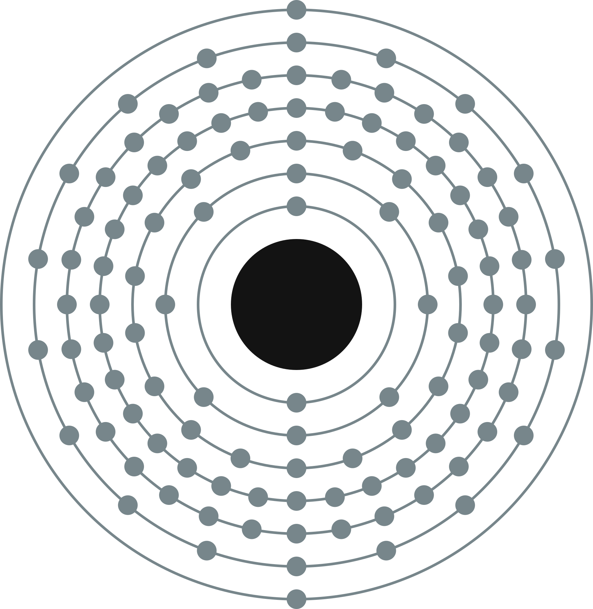

COPERNICIUM
Copernicium was created and identified on Feb. 9, 1996, by a team led by Peter Armbruster and Gottfried Münzenber in Darmstadt, Germany.
The most stable isotope of Copernicium is 285Cn, with a half-life of about 30 seconds. It decays through alpha decay.
Copernicium is produced artificially. It can be made by bombarding atoms of lead with ions of zinc through a linear accelerator.
Only a few atoms of copernicium have ever been made. Its only use is in scientific research.

Copernicium (Cn)
| Atomic Number | 112 |
|---|---|
| Atomic Weight | 285 |
| Melting Point | Unknown |
| Boiling Point | Unknown |
| Density | Unknown |
| Period Number | 7 |
| Group Number | 12 |